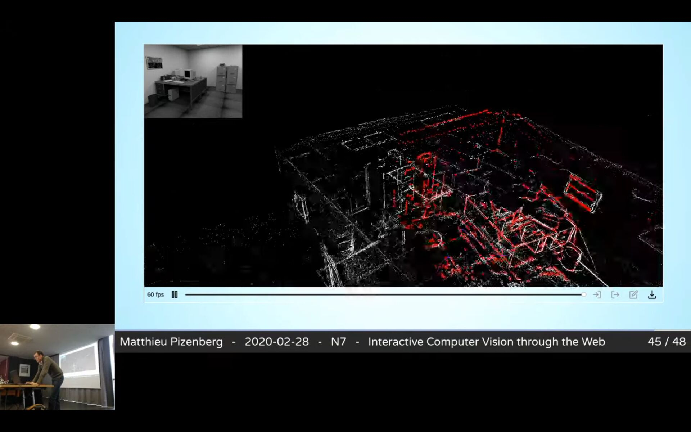

Matthieu Pizenberg
PhD Thesis, 2020

Computer vision is the computational science aiming at reproducing and improving the ability of human vision to understand its environment. In this thesis, we focus on two fields of computer vision, namely image segmentation and visual odometry and we show the positive impact that interactive Web applications provide on each.
The first part of this thesis focuses on image annotation and segmentation. We introduce the image annotation problem and challenges it brings for large, crowdsourced datasets. Many interactions have been explored in the literature to help segmentation algorithms. The most common consist in designating contours, bounding boxes around objects, or interior and exterior scribbles. When crowdsourcing, annotation tasks are delegated to a non-expert public, sometimes on cheaper devices such as tablets. In this context, we conducted a user study showing the advantages of the outlining interaction over scribbles and bounding boxes. Another challenge of crowdsourcing is the distribution medium. While evaluating an interaction in a small user study does not require complex setup, distributing an annotation campaign to thousands of potential users might differ. Thus we describe how the Elm programming language helped us build a reliable image annotation Web application. A highlights tour of its functionalities and architecture is provided, as well as a guide on how to deploy it to crowdsourcing services such as Amazon Mechanical Turk. The application is completely open-source and available online.
In the second part of this thesis we present our open-source direct visual odometry library. In that endeavor, we provide an evaluation of other open-source RGB-D camera tracking algorithms and show that our approach performs as well as the currently available alternatives. The visual odometry problem relies on geometry tools and optimization techniques traditionally requiring much processing power to perform at realtime framerates. Since we aspire to run those algorithms directly in the browser, we review past and present technologies enabling high performance computations on the Web. In particular, we detail how to target a new standard called WebAssembly from the C++ and Rust programming languages. Our library has been started from scratch in the Rust programming language, which then allowed us to easily port it to WebAssembly. Thanks to this property, we are able to showcase a visual odometry Web application with multiple types of interactions available. A timeline enables one-dimensional navigation along the video sequence. Pairs of image points can be picked on two 2D thumbnails of the image sequence to realign cameras and correct drifts. Colors are also used to identify parts of the 3D point cloud, selectable to reinitialize camera positions. Combining those interactions enables improvements on the tracking and 3D point reconstruction results.